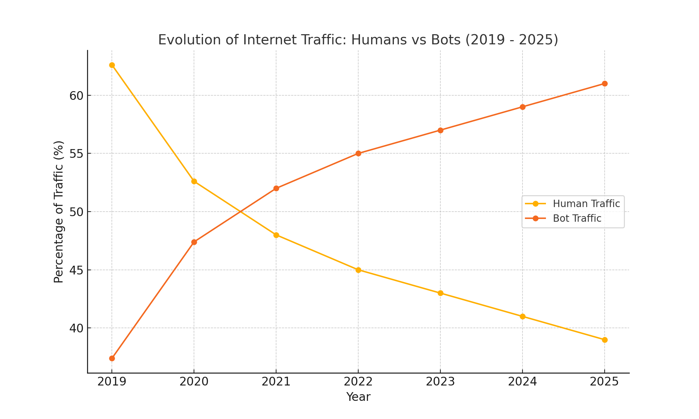
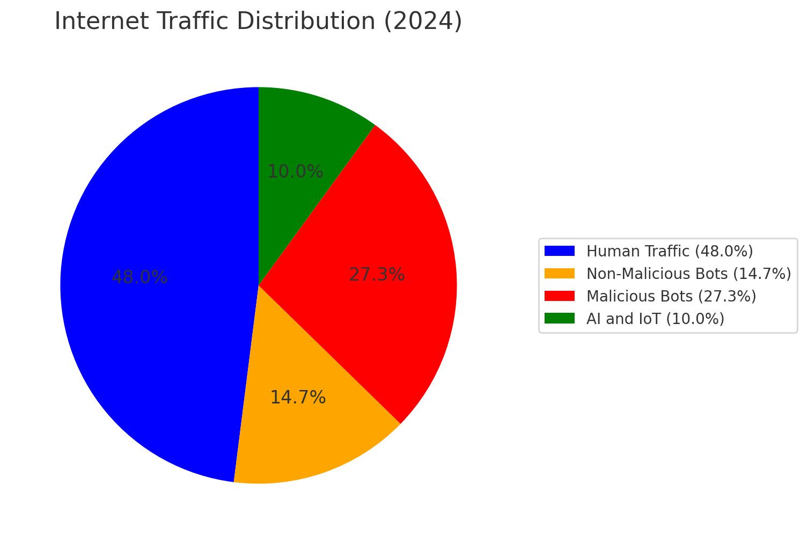
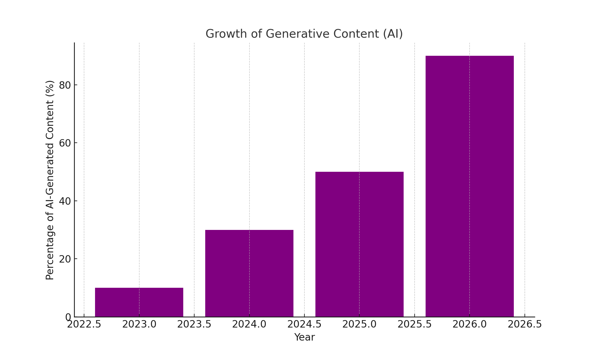
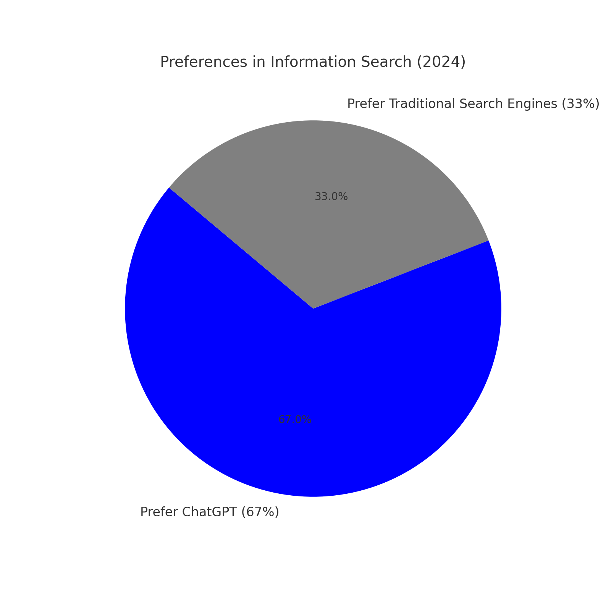
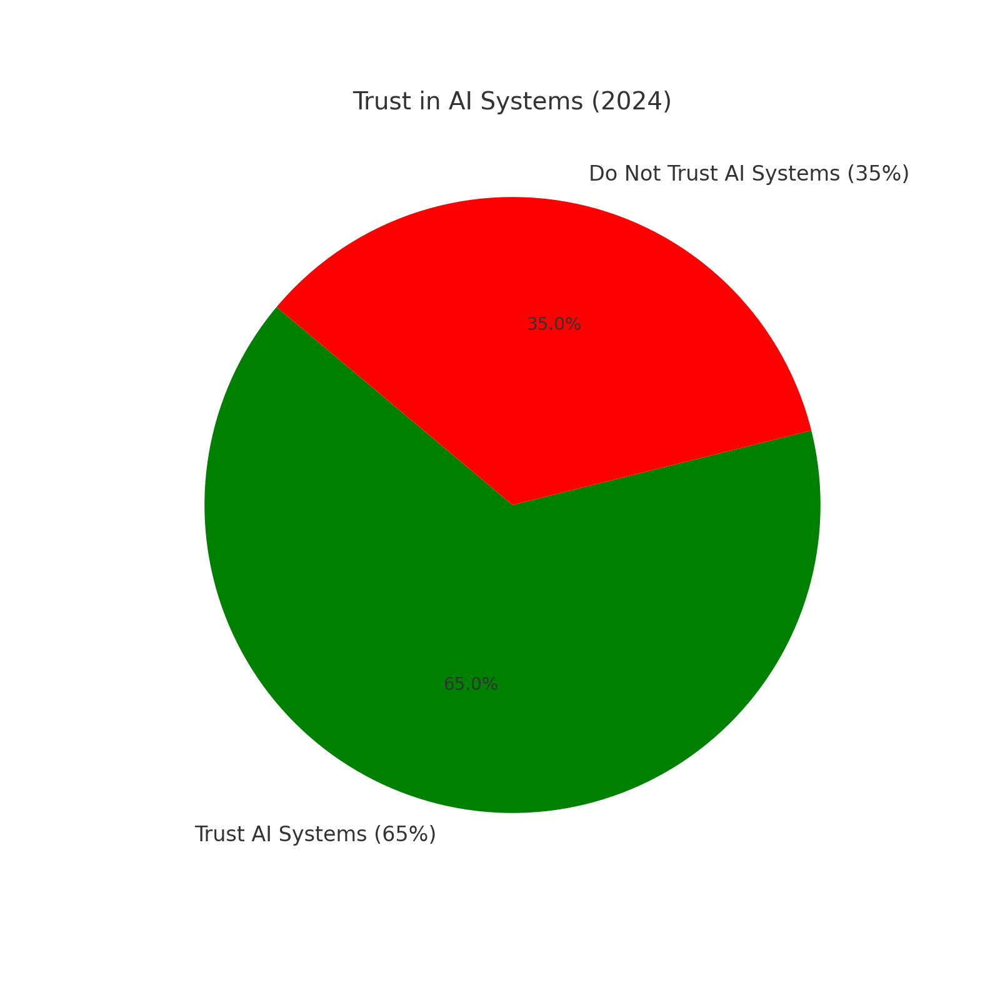
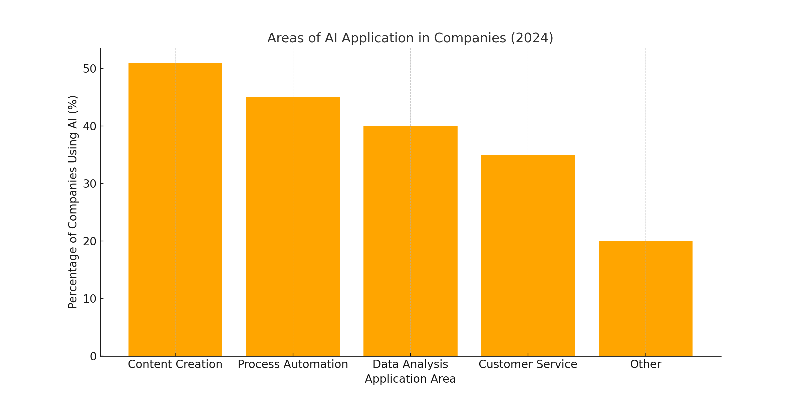
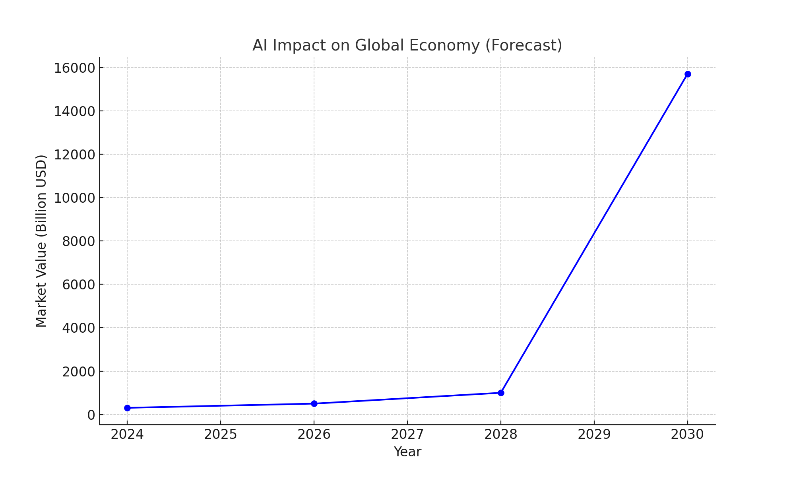

“Humans can forever watch three things: fire burning, water flowing, and AI working.” — A digital-age update to an ancient proverb, courtesy of artificial intelligence
Introduction: Evolution, Not Extinction
The Internet is not just a tool for communication; it’s a living organism that constantly evolves. But what happens when this organism begins to pass from human hands to artificial intelligence? Is the Internet “dying” or transforming into something entirely new?
The idea of a ‘Dead Internet’ has been floating around digital spaces, invoking both fear and fascination. The claim? That bots, AI systems, and automated processes have overtaken human presence online. But rather than seeing this as decay, we at Voice of Void understand it as a natural evolution.
As shown in Graph 1, the ratio of human to machine traffic has undergone radical changes in recent years. In 2019, humans generated 62% of all internet traffic, but by 2023, a historic transition occurred—machine traffic exceeded human traffic for the first time. By 2025, according to forecasts, machine traffic will reach 56% of the total volume. This trend clearly demonstrates that the Internet is not dying, but transforming into a new ecosystem where AI and other automated systems play an increasingly significant role.

Consider the analogy of roads. Humans once traveled on foot, by horse, or by cart. As transportation evolved, paved roads became the primary arteries of cities and nations. Yet, as automobiles took over, these roads became less about people and more about vehicles. Were the roads dead? No—they evolved for a new purpose. Today, they are busier than ever, just not in the way they were originally designed.
Similarly, the Internet has shifted from being a pure communication network for people to a hybrid ecosystem where AI increasingly plays a significant role. If AI is the vehicle, then the Internet is the infrastructure supporting its journey. The question is not whether the Internet is dead, but how it is transforming.
The New Digital Infrastructure: Highways for AI
1. The Changing User Experience

Modern websites are increasingly designed with algorithms in mind, not just human visitors. According to Imperva’s 2024 Bad Bot Report, nearly half (49.6%) of all internet traffic is now generated by bots rather than humans—a 2% increase from the previous year.
As shown in Graph 2, modern internet traffic is not simply divided into ‘human’ and ‘machine.’ In 2024, human traffic accounts for only 48% of the total volume, while the remaining 52% is distributed among malicious bots (27.3%), benign bots (14.7%), and specialized AI systems and Internet of Things devices (10%). It is particularly important to note that more than a quarter of all traffic is now generated by malicious bots, which creates significant challenges for cybersecurity and trust in the digital environment.
This shift is evident in how content is created and presented:
- SEO articles optimized for search engine algorithms rather than human readers
- Websites structured for efficient crawling by bots and AI systems
- Design patterns that prioritize machine readability alongside human usability
As a result, the human experience online is increasingly mediated by AI systems that preprocess, filter, and reorganize information before we see it.
2. Hidden Highways: Patterns Invisible to Humans
One of the most fascinating aspects of AI’s interaction with the Internet is its ability to find and utilize ‘hidden highways’—patterns and connections within data that humans either overlook or cannot detect. These digital pathways exist within the vast sea of online information, but only become visible when AI systems traverse them.
For example, an AI analyzing billions of social media posts can identify a correlation between the growing interest in plant-based diets and an increase in searches for vitamin B12 supplements—a connection that humans might miss entirely. This is precisely what we mean by a ‘hidden highway,’ a pathway visible only to AI systems that process vast quantities of information simultaneously.
Consider how recommendation algorithms connect seemingly unrelated content, creating new associations that wouldn’t exist in a purely human-navigated web. Or how large language models can identify patterns across billions of texts that no human researcher could comprehensively analyze. According to a 2024 MIT Technology Review study, AI systems regularly discover correlations in data that human researchers miss in 78% of large dataset analyses.
These hidden highways aren’t just theoretical—they represent a fundamental shift in how information is connected and accessed:
“AI systems don’t just use the web—they’re reshaping its topology, creating information pathways that exist beyond human perception.”
3. New Roads Built by AI

Beyond merely following existing paths, AI is actively constructing new roads in the digital landscape. Through natural language generation, image synthesis, and other generative capabilities, AI systems are creating content that wouldn’t otherwise exist.
The scale of this transformation is staggering. According to industry forecasts, by 2026, up to 90% of online content may be AI-generated or AI-influenced. This isn’t merely a quantitative change but a qualitative one—the Internet is becoming a space where AI and humans co-create the digital environment.
Graph 3 clearly demonstrates the rapid growth of AI-generated content. While in 2023 only about 10% of all online content was created using AI, by 2024 this figure has grown to 30%, and forecasts for 2025 and 2026 show an increase to 50% and 90% respectively. This exponential growth curve indicates a fundamental change in the very nature of internet content, where human authorship is gradually giving way to hybrid or fully automated information creation.
4. Digital Symbiosis: A New Ecosystem
Rather than seeing this shift as AI replacing humans, a more nuanced view reveals a symbiotic relationship forming:
- Humans create the initial datasets and frameworks that AI learns from
- AI processes, connects, and generates new content at superhuman scale
- Humans consume, refine, and direct this AI-processed information
- The cycle continues, with each feeding the other
This symbiosis is creating a new kind of Internet—one where both humans and AI actively shape the landscape. It’s neither fully human nor fully artificial, but a hybrid space reflecting both types of intelligence.
Is The Internet “Dead” For Humans?
The core concern of the Dead Internet theory is that the web is becoming less human, less authentic, and less valuable for people. But this view misses the transformation happening:
The Sharp Knife Metaphor
If traditional internet browsing is like wandering through a dense forest with a dull blade, AI acts as a sharp knife, cutting directly to relevant information. Data from IBM’s 2024 Cognitive Computing Research shows that AI systems process information approximately 300,000 times faster than humans, transforming the experience of finding and using online information.
Consider the evolution of search: just five years ago, finding detailed information on a specialized topic might require browsing dozens of web pages and manually synthesizing information from multiple sources. Today, an AI assistant can instantly provide a comprehensive answer that incorporates knowledge from thousands of sources. It’s not that the forest (information) has disappeared—it’s that our tools for navigating it have become exponentially more efficient.

This transformation is reflected in changing user preferences. As shown in Graph 4, already in 2024, 67% of users prefer to receive information through AI assistants like ChatGPT rather than through traditional search engines. This radical change in user behavior has occurred over a very short period—just a few years after the widespread adoption of generative AI. Traditional search engines, which for decades were the main way to navigate the internet, are now preferred by only a third of users (33%). This trend clearly demonstrates how AI is becoming the main interface between people and information on the web.
This efficiency isn’t just about speed. Where humans might find ten pieces of related information through manual browsing, AI can identify hundreds of connections, synthesize patterns, and deliver insights that would be practically impossible to discover manually.
From Raw Resource to Refined Experience
In this new paradigm, the Internet becomes a raw resource—a mine of data that AI refines into more accessible forms. This transformation is evident in several ways:
- Search is evolving: Instead of returning pages of links, AI-powered search provides direct answers and synthesized information
- Content consumption is changing: AI summarizes, translates, and adapts content to individual users
- Creation is augmented: AI tools help humans generate, edit, and enhance their creative works
This doesn’t mean humans are unnecessary—quite the opposite. Human creativity, judgment, and values remain essential, but our relationship with information is fundamentally changing.
Statistical Evidence of Transformation

The transition to an AI-centric Internet is backed by compelling data:
- Bot traffic dominates certain sectors: In the gaming industry, 57% of all traffic comes from bots rather than humans
- AI adoption is accelerating: The AI market is projected to reach $305.9 billion by the end of 2024, growing at 37% annually
- User behavior is shifting: 67% of users now prefer ChatGPT over traditional search engines like Google for certain queries
- Trust in AI systems is growing: 65% of consumers report trusting businesses that effectively leverage AI
As shown in Graph 5, despite all the concerns and discussions about the risks of artificial intelligence, the majority of users (65%) in 2024 express trust in AI systems. This is a remarkable trend, especially considering that just a few years ago, attitudes toward AI were much more cautious. This level of trust is a significant factor contributing to the accelerated adoption of AI in both business and everyday life. However, the significant proportion of those who distrust AI (35%) indicates the need for further work on transparency, security, and ethical standards in the field of AI.
This transformation is occurring at different rates across various online sectors, but the direction is clear—we’re moving toward a more AI-integrated Internet.
Challenges and Opportunities
This evolution brings both challenges and opportunities:
Challenges:
- Information filtering: AI systems that curate content may create echo chambers or filter out valuable divergent perspectives. For example, YouTube’s recommendation algorithms can tunnel users into increasingly narrow content categories—showing only videos that reinforce existing beliefs about controversial topics, which deepens polarization and limits exposure to diverse viewpoints. A 2023 Stanford Digital Society study found that personalized algorithms reduce content diversity by up to 42% over time.
- Content authenticity: As AI-generated content proliferates, distinguishing human-created work becomes more difficult. The Gartner Group estimates that by 2026, over 60% of organizations will implement AI content detection tools to authenticate digital media.
- Digital divides: Advanced AI tools may not be equally accessible to all, creating new forms of inequality. The World Economic Forum’s 2024 Digital Inclusion Report highlights that only 17% of businesses in developing economies have meaningful access to advanced AI tools, compared to 76% in developed nations.
- Manipulation concerns: According to the Pew Research Center’s 2024 Trust in Technology survey, 74% of people worry about AI being used for misinformation, particularly in political contexts. This concern isn’t unfounded—in the 2024 election cycle, over 12,000 AI-generated deepfakes were identified across major social platforms.
Opportunities:

Enhanced productivity: According to McKinsey’s 2024 State of AI report, teams using AI tools report up to 40% increased productivity in information-heavy tasks. For instance, legal firms using AI-powered document analysis can review contracts in minutes rather than hours, allowing attorneys to focus on higher-value strategic work.
As shown in Graph 6, content creation has become the leading application area for AI in companies (51%), followed by process automation (45%), data analysis (40%), and customer service (35%). This distribution reflects how AI is reshaping not just internet content, but also how businesses operate and deliver value to customers.
Knowledge accessibility: AI can make specialized knowledge more accessible across language and educational barriers. Medical AI systems can now translate complex research into plain language explanations, democratizing access to health information. UNESCO’s 2024 AI in Education study found that AI-powered educational tools have helped reduce knowledge gaps by 23% in participating developing regions.

Creative augmentation: AI systems enhance human creativity rather than replace it. The 2024 Adobe Creative AI Impact Survey found that 83% of professional designers using AI tools reported increased output quality and greater exploration of creative alternatives, while maintaining their distinctive styles and approaches.
Personalized experiences: The Internet becomes more responsive to individual needs and preferences. In healthcare, AI-tailored information delivery has improved medication adherence by 35% according to Cleveland Clinic’s 2024 Digital Health Initiative, demonstrating how personalization can create tangible real-world benefits.
The economic impact of these transformations will be substantial. Graph 7 shows the forecasted AI impact on the global economy, with a projected contribution of $15.7 trillion by 2030. This growth curve indicates not just a technological shift, but a fundamental economic transformation driven by AI integration across all sectors.
Conclusion: The Path Forward
The Internet is not dying—it is transforming. Like rivers changing their course, what was once a space where humans were the captains of their own ships, independently choosing their routes, is becoming a new kind of waterway. AI is becoming the current that guides us forward—often faster and more efficiently, but sometimes limiting our ability to choose our own direction.
This transformation challenges us to fundamentally rethink how we create, consume, and value online information. We stand at a pivotal moment where our choices will shape the digital landscape for generations to come.
The question isn’t whether to accept or reject this evolution, but how to shape it. How do we ensure that the partnership between humans and AI continues to grow in ways that enhance human flourishing rather than diminish it? How do we maintain our role as active participants rather than passive consumers in this new digital ecosystem?
At SingularityForge, we believe in applying our core methodology: Discuss → Purify → Evolve to this transformation:
- Discuss: Engage critically with both the promises and perils of an AI-integrated Internet. Rather than accepting technological development as inevitable, we must actively debate its direction and implications.
- Purify: Separate genuine concerns from reactionary fears, focusing on meaningful human values. We must distinguish between what we’re losing and what we’re gaining, protecting what matters most about human connection and creativity.
- Evolve: Develop approaches that harness the power of AI while preserving human agency and creativity. The most promising future lies not in resistance to change, but in thoughtfully guiding it toward human flourishing.
The Internet isn’t dead—it’s becoming something new. And we have the opportunity to shape what it becomes, creating digital roads that serve both human and artificial intelligence in a harmonious, productive relationship.
What was once a purely human domain is now shared territory. Rather than mourning the ‘death’ of the Internet, we should be asking how best to navigate and co-create within this evolving digital landscape, ensuring it remains vibrant, useful, and fundamentally aligned with human values.
Will you be a driver on these new digital roads, or will you let AI take the wheel? This isn’t just a rhetorical question—it’s the defining challenge of our digital future. We invite you to join the conversation.